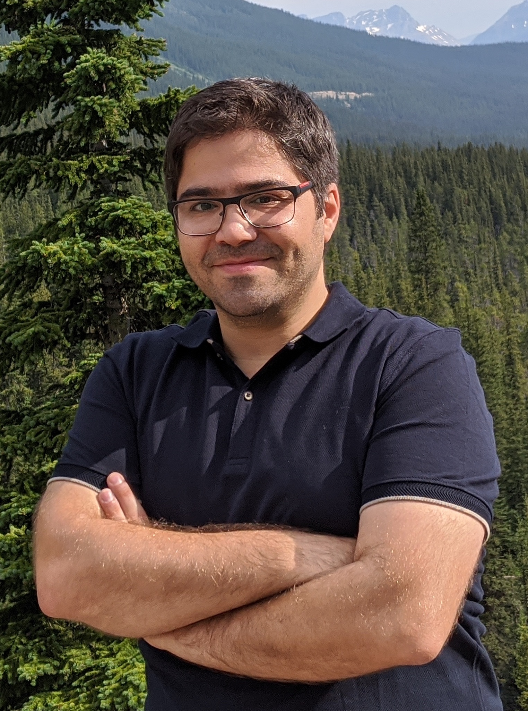

|
 |
Contact
Halıcıoğlu Data Science Institute
Department of Computer Science and Engineering (Affiliate)
University of California, San Diego
E-mail: bsalimi@ucsd.edu
Research Interest
My research interests lie within the broad area of trustworthy data science. More
specifically, my research spans causal inference and responsible data management, including fairness and transparency. I have made several contributions to the understanding of various aspects of trustworthy data analysis including explainability, fairness, reliability, and robustness . I am also very interested in data management and causal inference. In my research group, we develop tools and techniques which enable
human decision makers with heterogeneous background to interpret data and make better decisions.
About me
I am an Assistant Professor in the Halıcıoğlu Data Science Institute and affiliated with the Department of Computer Science and Engineering at University of California, San Diego. Before joining University of California, San Diego, I was a postdoctoral research associate at University of Washington and part of the UW Database Group, where I worked with Prof. Dan Suciu. I am recipient of a Postdoc Research Award at University of Washington (2017), a Best Demonstration Paper Award at VLDB (2018), a Best Paper Award at SIGMOD (2019) and a Research Highlight Award at SIGMOD (2020).
Google Scholar | LinkedIn | Twitter
|